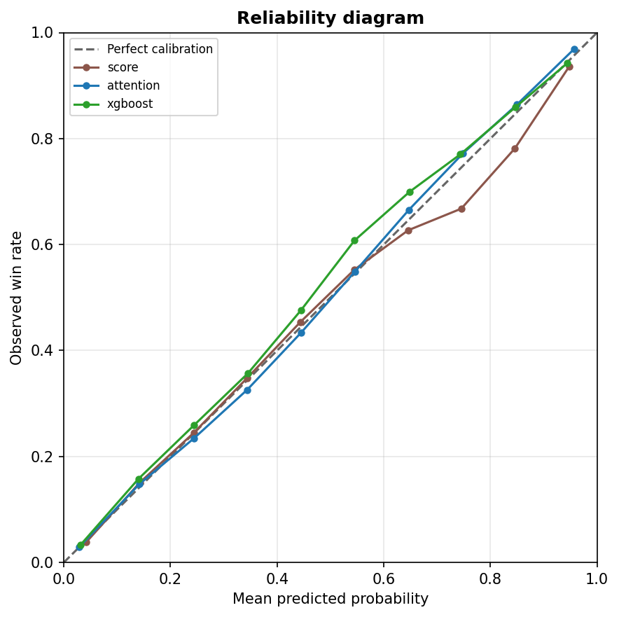
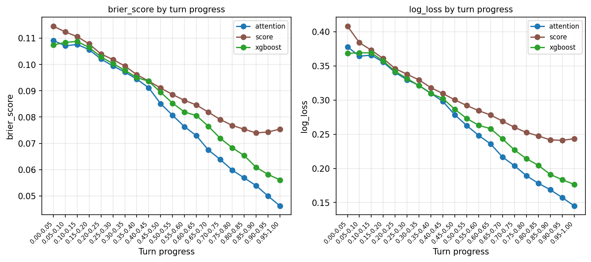
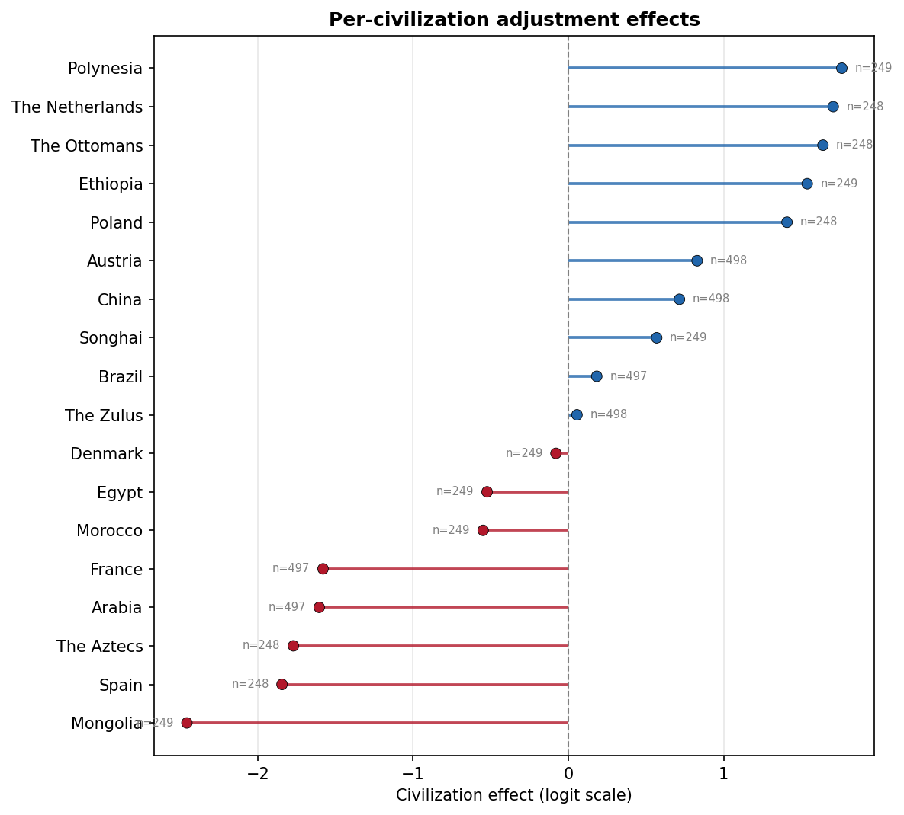

Controlled CivBench on Vox Populi 5.2.7, Civilization V
CalibrationA controlled version of CivBench (Chen et al., 2026). Each LLM strategists rotate through 3 standard maps (8 players), each game features 2 of the same LLM strategists + 6 Vox Populi AI players. Experimented with 2 conditions: having LLMs make a decision every turn (base); having them make a decision every 5 turns, or when an important event comes up (per-5).
Check whether predicted win probabilities match observed win rates, and examine how prediction errors, civilizations, and starting positions affect the evaluation.
Prediction reliabilityChecks whether predicted win probabilities match observed win rates (reliability curves and expected calibration error). Module: calibration.reliability n_bins: 10
attention is best calibrated with expected error 0.0040; the estimator errors range from 0.0040 to 0.0088 across 3 estimators.

ece
| model | ece | n_rows |
|---|---|---|
| score | 0.00582918 | 2541288 |
| attention | 0.00400603 | 2541288 |
| xgboost | 0.00875253 | 2541288 |
Downloads and supporting files (1)
Prediction error over timeTracks win-probability error from the opening turns through the end of the game (Brier score and log loss by game progress). Module: calibration.loss_by_progress n_bins: 20; metrics: brier_score, log_loss
The best brier score is 0.0462 for attention at game progress 0.95-1.00; values range from 0.0462 to 0.1147.

Downloads and supporting files (1)
Civilization strength effectsEstimates how much civilization choice shifts player strength in uncontrolled games (ordinary least squares). Module: calibration.civ_effects n_civs: 18
Polynesia has the strongest civilization effect (+1.776) and Mongolia the weakest (-2.455) on the log-odds scale, across 18 civilizations.

Downloads and supporting files (1)
Starting-position baselinesShows baseline AI strength for each map seed and starting position in the controlled experiment. Module: calibration.cell_baseline n_seeds: 3; n_conditions: 32; has_explicit: True
Starting-position baselines range from -6.182 to +0.945 log-odds across 3 map seed(s) and 32 conditions.